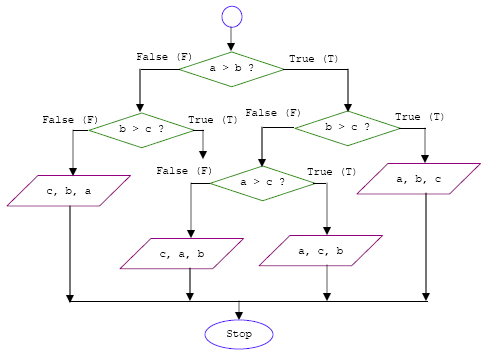

Out: 09/17 19:00
For problem set i, create a script named PS1_i.R. Submit your scripts and report via GitHub by 10/10 19:00
Collaboration:
Collaboration on solving the assignment is allowed, after you have thought about the problem sets on your own. It is also OK to get clarification (but not solutions) from online resources, again after you have thought about the problem sets on your own. There are two requirements:
Late Submission:
Late submissions will not receive full credit. Half credit will be awarded to correct solutions submitted within 24 hours of the original deadline. Otherwise, no credit will be given.
Submitting your assignment:
Submit your scripts and report via GitHub. The submission time is determined based on your Github records.
[5 points] Write a function Print_values with arguments a, b, and c to reflect the following flowchart 1. Here the purple parallelogram operator is to print values in order. Report your output with some random a, b, and c values.

2.1 [5 points] Make two matrices M1 (5 rows and 10 columns ) and M2 (10 rows and 5 columns ); both are filled with random integers from 0 and 50.
2.2 [5 points] Write a function Matrix_multip to do matrix multiplication, i.e., M1 * M2. Here you are only allowed to use for loop, * operator, and + operator. Check your result with the %*% operator.
[10 points] One of the most interesting number patterns is Pascal’s triangle (named after Blaise Pascal). Write a function Pascal_triangle with an argument k to print the kth line of the Pascal triangle. Report Pascal_triangle(100) and Pascal_triangle(200).
[15 points] If you start with 1 RMB and, with each move, you can either double your money or add another 1 RMB, what is the smallest number of moves you have to make to get to exactly x RMB? Here x is an integer randomly selected from 100 to 200. Write a function Least_move to print your results. For example, Least_move(2) should print 2, and Least_move(5) should print 3.
Insert + or - operation anywhere between the digits 123456789 in a way that the expression evaluates to an integer number. You may join digits together to form a bigger number. However, the digits must stay in the original order. For example: \[ 1 - 2 + 34 + 5 + 6 + 7 + 8 - 9 = 50 \] \[ 1 + 2 + 34 - 56 + 78 - 9 = 50 \] 5.1 [15 points] Write a function Find_expression, which should be able to print every possible solution that makes the expression evaluate to a random integer from 0 to 200.
5.2 [5 points] Count the total number of suitable solutions for any integer i from 0 to 200, assign the count to Total_solutions[i]. Plot the vector Total_solutions, so which number(s) yields the maximum and minimum of Total_solutions?
(Hint: You may find seq(), choose(), and permutations() useful)
In this problem set, we will examine how visibility changes in Shenzhen during the past 10 years. Recall the 2281305.csv you used for Exercise #3 in Section 03. Hourly visibility data are stored under the VIS column. Read page 10 of the comprehensive user guide for the detailed format of the data.
You want to only use data points satisfying the following criteria:
0 and 160000VISIBILITY-OBSERVATION distance quality code is 1, VISIBILITY-OBSERVATION variability code is N, and VISIBILITY-OBSERVATION quality variability code is 1.6.1 [15 points] Plot hourly visibility data as a function of the observation time, similar to the time series plot you made in Exercise #3. Based on your naked eyes, is there a trend in visibility during the past 10 years?
6.2 [10 points] For each year, report the number of days with visibility within the following intervals: [0,5),[5,10),[10,15),[15,20),[20,25),[25,30), and >=30. Is the visibility getting better or worse?
Browse the CASEarth website. Search and download a data set you are interested in. Your data should be in csv or XLSX format, and have temporal information. In R, do the following:
7.1 [5 points] Load the csv or XLSX file, and clean possible data points with missing values or bad quality.
7.2 [5 points] Plot the time series of a certain variable.
7.3 [5 points] Conduct at least 5 simple statistical checks with the variable, and report your findings.
{kind=link}